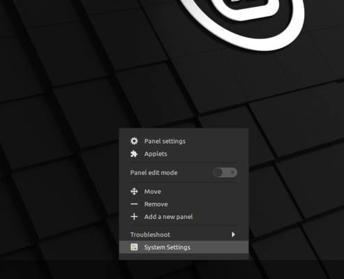
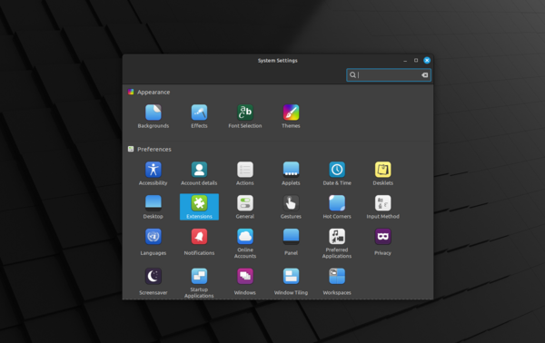
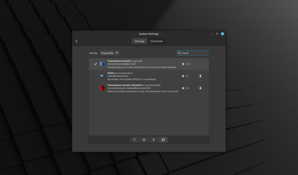
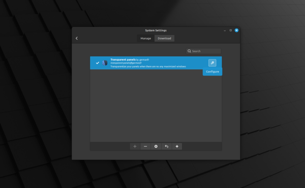
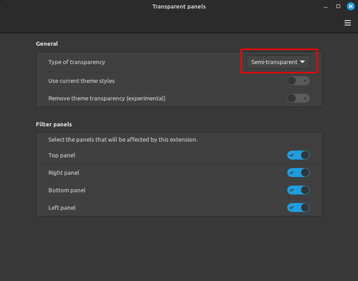

Home mint
Transparant panels:
1 - Right click on a panel and choose system settings

2 - Choose "Extensions"

3 - Look for "Transparent panels"
4 - Click on the download button to the right of "Transparent panels"

5 - Activate the "Transparent panels" on the plus sign below.
6 - Configure your panel at the gear icon

7 - Set your desired settings
